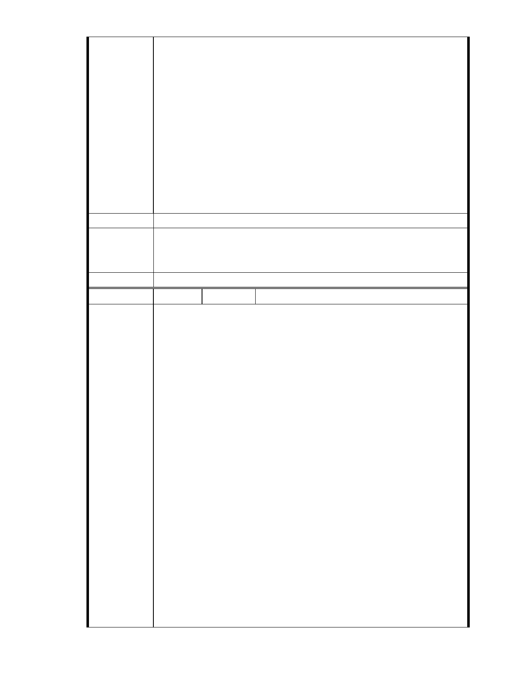

,那以後是不是國家公園保護區是不是也都可以依此例,變更土地分區,
蓋"上人紀念館"???
昨天聽到北市府都發局官派都委大聲急呼,"慈濟保護區蓋志業大樓是調
和經濟發展裡非常重要的一股穩定力量"真的是一整個傻眼...是不是因
為他也是功德會的成員呀...都不用避嫌???
北市府公務員居然"公開"帶頭違法圖利特定團體,這樣荒唐的事,吳院長
應該請營建署,環保署,水利署去關心指導地方??
團隊裡不應該讓特定團體私自開後門走後路,這樣真的是很難堪.
2012 我們要先自己上緊發條,自己盯僅一點,真的不要再讓團隊裡的人再
出錯了...
行政院院長電子信箱小組 敬啟
建議辦法
一、本案已進入都市計畫法定程序，後續將依都市計畫委員會審定內容
市府說明
為準。
二、相關陳情意見將納入本案審查人民意見，依法定程序辦理。
委 員 會 決 議 同編號 1。
編
號 87
陳情人 市長信箱（ MA201012080173 ）
近日，慈濟開發內湖保護區要興建志工大樓案，進入台北市都市計畫委
員會審議階段，多個環保團體與內湖居民今天在台北市政府大門抗議，
要求立即停止審議這項開發案。
他們也籲請慈濟放手停止開發，同時也要求台北市政府立即停止違法審
查程序並撤案。
陳情理由
「慈濟以都市計畫法第 27 條『符合國防及經濟發展需求』條文作依據，
是完全不符規定。」蠻野心足生態協會祕書長林子凌指出，加上依據都
市計畫法規定，只有政府才能提出主計畫的變更，所有權人只能變更細
部計畫，而這塊原屬於保護區的土地，不應變更興建大樓，這項審議是
完全違法、無效，市府應立即撤案。
內湖保護區守護聯盟今天也特別在蘋果日報，以「請慈濟手下留情放過
保護區吧！」的半版廣告，期盼各界關注慈濟向市府提案變更內湖保護
區的嚴重性。
慈濟開發內湖保護區要興建志工大樓案照成內湖居民的抗義及反感，懇
請市長聽聽內湖人的心聲
我們不想看到內湖在有淹水的一天，市長也曾當過環保局長，請站在環
保的立場，想想後代的子孫....
- 72 -